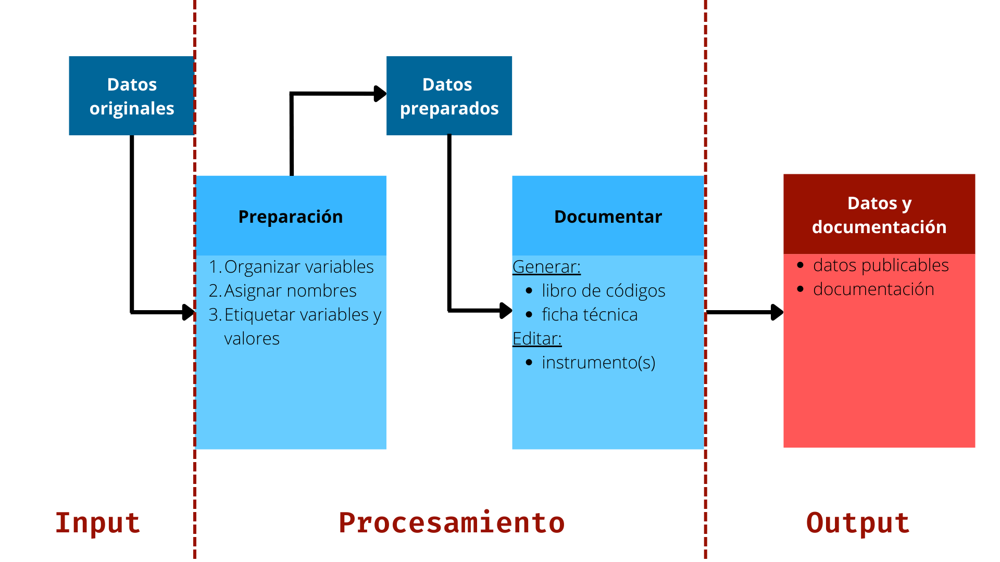

IPO-datos 
Protocolo de apertura de datos
Siguiendo la lógica del protocolo IPO-reproducibilidad, el protocolor IPO-datos es una plantilla/protocolo de estructura digital de carpetas que tiene por objetivo el organizar, procesar y documentar los datos de un proyecto de investigación con miras a la apertura de los datos en un repositorio público y de acceso libre.
Al igual que los proyectos reproducibles, este protocolo propone los pasos a seguir para la apertura de datos, pasando por la preparación de la base de datos bruta, su documentación técnica y uso de los datos. Para ello, se emplea un conjunto de carpetas con archivos auto-contenidos para cada uno de estos pasos.
A continuación presentaremos la estructura general de carpetas, su función y las tareas asociada a cada una de ellas.
Archivos y estructura de carpetas
La estructura se detalla en el siguiente esquema:
- 1. Input
- Datos originales (.dta/.sav/.csv)
- Tablas
- Imágenes (.png/.jpg)
- 2. Preparación
- Procedimientos de preparación de datos (.R/.Rmd/.do)
- Documento ficha técnica (.odt/.md/.Rmd)
- Procedimientos preparación libro de códigos
- Documento de intrumentos (.odt)
- 3. Output
- Datos a publicar (.RData/.dta)
- cita bibliográfica (.bib)
- ficha técnica (.pdf/.html)
- libro de códigos (.pdf/.html)
- instrumentos (.pdf/.html)
1. Input
Los datos originales corresponden a la base o las bases de datos en su formato original sin modificaciones en la posición de las variables, nombres y etiquetas de variables y valores de variable.
Por ejemplo, tenemos un archivo en formato original .sav (SPSS):
- Archivo:
Estudio3_ola1.sav
Tablas
En el caso de emplear información de tablas con información complementaria para la documentación (p.ej. descripciones, categorías para clasificación, etc.) deben almacenarse en esta carpeta en el formato a emplear.
Sugerimos emplear formatos Valores separados por commas (.csv) u hojas de cálculo (.ods, .xls).
Imágenes
Las imágenes empleadas y que serán incluidas en la documentación pueden almacenarse en formatos como .png o .jpeg. Deben ser correctamente individualizadas y el nombre del archivo debe describir su contenido.
2. Preparación
Se sugiere que el procedimiento de organización, asignación de nombres y etiquetado, tanto de las variables como de valores de variable, se realice en una rutina de código. Los datos originales se encuentran almacenados en la carpeta Input
- Archivo:
prod_prep.Rmd/.R/.do
El siguiente cuadro resume el proceso:
| Datos originales | Preparación | Datos a publicar | ||
Estudio3_ola1.sav
|
-> |
prod_prep.R/.do
|
-> |
study_w01.RData/.dta
|
La preparación se compone de:
- Se deben organizar las variables según su función en la base de datos. Por ejemplo, variables de identificación individual o pertenencia a unidades de nivel superior (p.ej. estudiantes en escuelas) pueden ir primero, luego las características sociodemográficas, preguntas de opinión pública o variables que identifiquen pertenencia a grupos (p.ej. tratamiento o control).
La asignación de nombres a las variables juega un rol clave en la identificación de la información.
Existen distintos estándares para el nombramiento de variables, por tanto se debe decidir de qué manera lo realizamos para que sean claras y empleables en distintos softwares. Algunos ejemplos pueden ser:
- “V” y enumeración (V001, V002)
- Letras y números para agrupar variables según escalas o temas (Q1,Q2a,Q2b)
- Abreviaturas mnemotécnicas (educpadr para “educación del padre”)
- Etiquetas de variable: se asigna a la variable y ofrece información sobre su contenido.
- Etiquetas de valores de variable: se asignan a los valores de una variable.
- Codificación de datos perdidos: identificar correctamente un dato que se clasifica como perdido
La siguiente tabla muestra un ejemplo:
| Nombre Variable | Etiqueta variable | Valores | Etiqueta valores |
| d01_01 | Votó en última elección | 0 | No votó |
| 1 | Votó | ||
| 99 | Perdido |
Para almacenar la base de datos resultante del procesamiento, sugerimos considerar los siguientes puntos:
- Nombre del archivo: usar nombre corto y que identifique el estudio (
[nombre]_01) - Formato del archivo: poner a disposición el archivo en formatos de uso frecuente en ciencias sociales (
.dta,.RDatao.sav)
Los datos resultantes de la preparación, corresponden al archivo final que unifica los datos que pondremos a disposición pública y que deben ser almacenados en la carpeta Output
Si deseas saber mayores detalles visita nuestra guía completa:
Contenidos
- La ficha técnica es un documento que describe las principales características técnicas del estudio.
- Podemos encontrar información referente a la población objetivo del estudio, estrategia y tamaño muestral, estadísticos de logro (p.ej. tasa de respuesta), fecha de trabajo de campo, entre otros.
Algunas sugerencias para la creación de la ficha técnica son las siguientes:
Si el estudio contiene una o más fuentes de datos, se debe generar una ficha técnica para cada una.
La ficha técnica debe estar organizada en secciones para según las característica del estudio:
- Tipo de muestra
- Estrategia de Campo
- Entidad a cargo del trabajo de campo
- Modo de aplicación
- Número de respuestas
- Detalle de la muestra
- Idioma
- Ponderadores
- Otros
Se recomienda que la versión final de la ficha técnica se almacene en fomato .pdf en la carpeta Output
Contenidos
Un libro de códigos es un documento que contiene información detallada de una fuente de datos, tales como nombres de variable, etiquetas de variable, etiquetas de valores o valores perdidos.
Un libro de códigos bien documentado permite conocer el contenido, estructura y diseño de un estudio, lo cual facilita vincular las preguntas del cuestionario con cada una de las variables en la base de datos
Algunas sugerencias básicas de lo que puede incluir libro de códigos son las siguientes:
Nombre de variable: El nombre o numeración asignada a cada variable en la base de datos. En algunas ocasiones se utilizan abreviaciones mnemotécnicas (TOPBOTOM) o patrones alfanuméricos (d01_01). Para los datos provenientes de encuestas se sugiere emplear los números de las preguntas (P01, P02).
Etiqueta de variable: Una descripción breve que permite identificar la variable. Si es posible, se sugiere utilizar un fragmento del fraseo de la pregunta en el cuestionario. Valores: Los valores reales de la variable (p.ej: 1, 2, 3, 4, 5)
Etiquetas de valores: El texto asignado a cada uno de los valores de variable (Totalmente en desacuerdo, En desacuerdo, Ni de acuerdo ni en desacuerdo, De acuerdo, Totalmente de acuerdo)
Valores perdidos: Si aplica, son los valores y etiquetas de valores para los datos perdidos. La correcta descripción de estos datos evita problemas en los análisis, por lo cual deben estar correctamente descritos (ver sección de Bases de datos, Codificación de las respuesta)
Se recomienda que la versión final del libro de códigos se almacene un archivo formato .pdf en la carpeta Output
Contenidos
- Estos documentos son lo instrumentos empleados en la producción de los datos. En el caso de las encuestas, corresponden al cuestionario con todas las preguntas que se han realizado a los participantes del estudio.
- Un cuestionario debe contener las preguntas y las alternativas o campos de respuesta (preguntas abiertas) acompañado de un identificador que permita vincularlos con la variable en la base de datos que se indica en el libro de códigos.
Algunas sugerencias de lo que debe incluir un instrumento son las siguientes:
El documento debe ser ilustrar adecuadamente cómo fueron realizadas las preguntas a los participantes. Debe mostrar el fraseo original de las preguntas y alternativas de respuesta.
Debe estar organizado en secciones a través de las cuales se organizaron originalmente las preguntas en el cuestionario.
Se recomienda que la versión final del los instrumentos se almacene en un archivo formato .pdf en la carpeta Output
3. Output
Corresponden a los datos finales para publicar y que fueron preparados en la carpeta Preparación
Archivo:
study_w01.RData/.dta/.sav
Los archivos de documentación son aquellos que describen el contenido de los datos, uso y correcta identificación.
- El documento en formato pdf de la ficha técnica del estudio.
- El documento en formato pdf del libro de códigos de los datos.
- El documento en formato pdf de los instrumentos de producción de datos.
Recomendamos emplear formatos de citación como APA o Chicago. Al momento de publicar nuestros datos en repositorios como Dataverse, obtendremos un DOI (Digital Object Identifier) que permitirá individualizar y hacer encontrables los datos.
Idealmente, este documento debe generarse posteriormente a almacenar la fuente de datos en un repositorio, dado que previo a ello no se dispone de un DOI.
El archivo puede ser en formato .bib (BibTeX) .
Principios básicos
orden: pensar que estás trabajando en equipos y en ocasiones no todos se encuentran familiarizados con el proyecto. De la misma manera, pensar en que alguien en el futuro (o usted mismo) pueda emplear esta información sin dificultad.
estandarizar: establecer procedimientos mínimos para la estandarización de el proceso de preparación de datos previo a su publicación.
documentar: una base de datos debe estar correctamente documentada para su uso. Establecer formas de documentar (ficha técnica, libro de códigos, etc) facilitan la publicación y usabilidad de los datos por parte de investigadores externos.
El flujo de trabajo asociado a estos principios se presenta en el siguiente esquema:

Ejemplo
Un ejemplo mínimo para probar la implementación del protocolo se puede bajar aquí
Notas
como el entorno R / Rmarkdown permite combinar texto, análisis y resultados, las carpetas de preparación y output pueden resultar redundantes. Este es probablemente el caso de análisis e informes breves. Sin embargo, cuando se trabaja con documentos independientes como puede ser la ficha técnica o el libro de códigos, es aconsejable separar los archivos de preparación y sus resultados en carpetas independientes, a pesar de trabajar con Rmarkdown.
para facilitar el trabajo en RStudio, es posible que desee hacer de la carpeta del proyecto una carpeta Rproject. Esto hará que el directorio de trabajo se remita automáticamente a la raíz, además de activar otras funciones dentro de Rstudio. Para esto, en RStudio simplemente vaya a Archivo -> Nuevo proyecto-> Directorio existente y apunte a la carpeta del proyecto. Esto creará un archivo con la extensión
.Rprojque, al hacer clic, abrirá Rstudio con la carpeta del proyecto como raíz. De esta manera, evita generar directorios de trabajo individuales locales (el comando Rsetwd), que no facilitan la reproducibilidad. Si se logra entender por qué no se debe referir en el código a un directorio local (como consetwd), entonces está más cerca de entender el sentido de la reproducibilidad.además de tener una carpeta de proyecto donde está contenida toda la información, la clave técnica para trabajar dentro de esta estructura es guardar y cargar archivos ubicados en diferentes lugares a través de rutas relativas (relative paths), lo que permite conectar diferentes archivos dentro del mismo proyecto/carpeta. Por ejemplo, para cargar un archivo de datos desde la carpeta
originaldesde el códigoproc_preparacion.Rmd.
¿Quieres comentar o tienes alguna duda?
Puedes dejar tus comentarios y dudas sobre el Protocolo IPO-datos en nuestro foro. De todas formas puedes contactarnos